| 日付 | 2021年5月3日（月） |
|---|---|
| 山域 | 西上州 |
| メンバー | 家族（妻、長女・10歳、長男・7歳） |
| 山行形態 | 子連れ日帰り |
| アクセス | 車 |
| ルート (Map) | 国民宿舎裏妙義 (8:39) - (9:24) 女道入口 - (10:35) 女道分岐 - (11:21) P2 (11:33) - (12:09) 谷急山 (12:37) - (13:15) P2 - (13:56) 女道分岐 - (14:04) 三方境 - (15:20) 国民宿舎裏妙義 |
昨日に引き続き、山に行くことにする。
このGWは他にやることが全てなくなってしまったので、
谷急山登山がメインイベントだ。
妙義山塊の最高峰で、妙義山ほど難易度は高くないが
それなりに険しい山らしく、前々から登ってみたいと思っていた。
混雑することもまずない山なので、コロナ禍でも問題なさそうだ。
国民宿舎裏妙義跡の駐車場に車を停める。標高430m。
ここは表妙義、裏妙義の登山口でもあるので、停まっている車の数は多い。
裏に聳える岩峰が美しい。
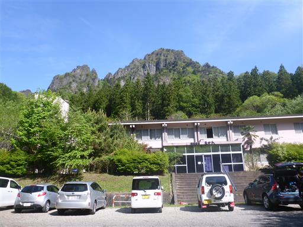
シャクナゲの花が咲いている。
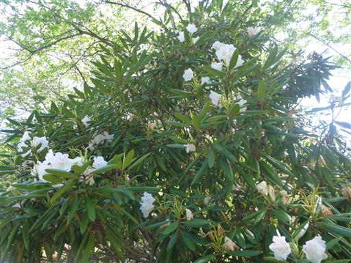
しばらくは林道を歩いて登山口を目指す。
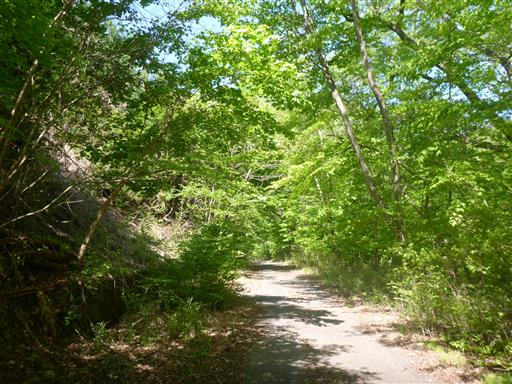
ガードレールに土砂がせき止められている。
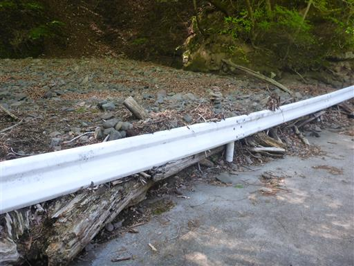
女道入口に到着。近くに男道と呼ばれる登山道はなさそうだが、なぜ女道なのだろう？
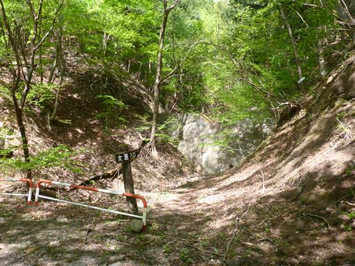
側に仏様が祀られている。
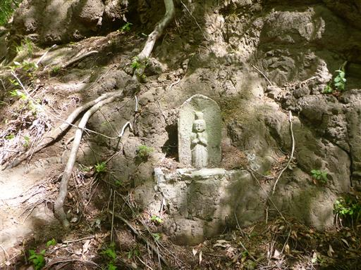
登山道はいきなりの急斜面から始まる。
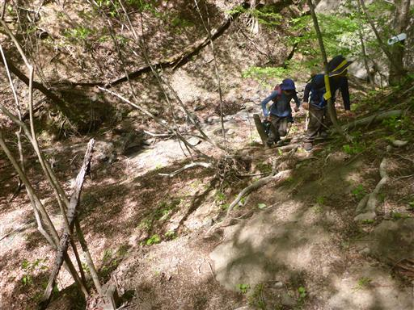
しばらく登ると新緑が美しい尾根道になる。
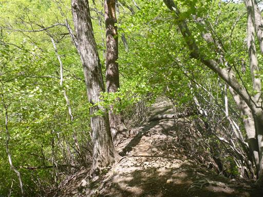
足場が細いトラバース道。
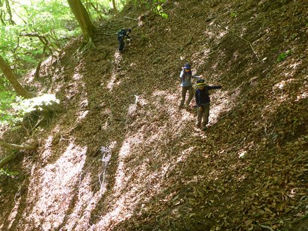
沢に下りてくる。ここからしばらく沢沿いを登る。
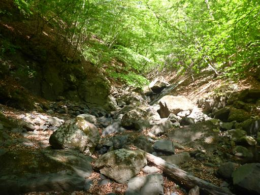
何度も沢を渡る。水量は少なく石をジャンプするだけで容易に渡れる。
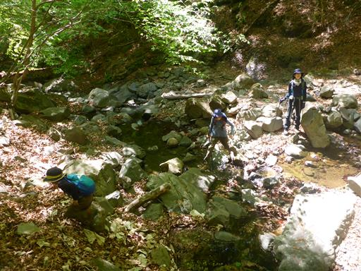
ぐるぐるに捻じれたツル植物。
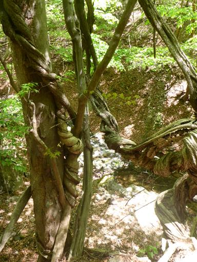
周囲の新緑が非常に美しい。
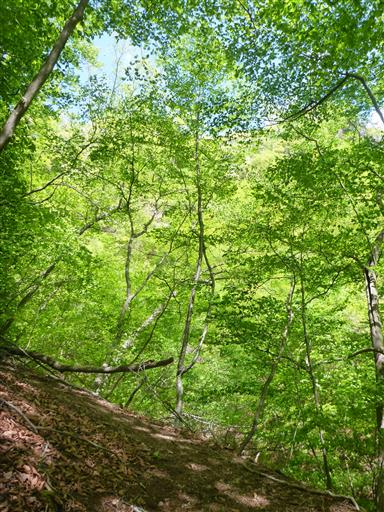
新緑の中の斜面を登る。
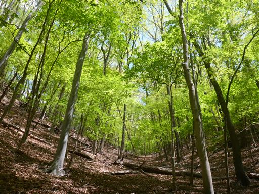
傾斜が急という訳ではないのだが、落ち葉が膝まで積もっていて極めて登りにくい。
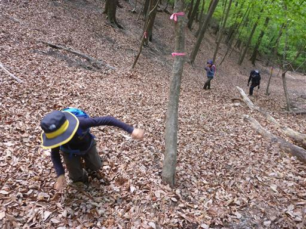
再び尾根に出てくる。ところどろこに咲くツツジが目を楽しませてくれる。
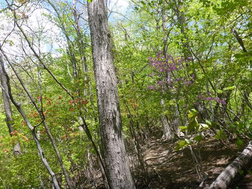
木の幹の真ん中に水が溜まっている。

キノコにびっしりと覆われた倒木。
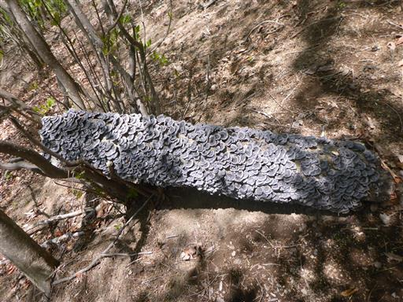
谷急山との分岐点に到着。
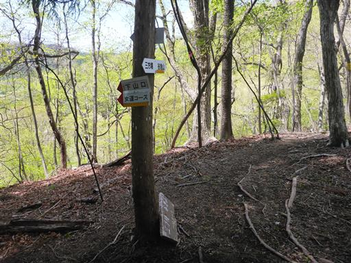
遠くに岩峰が見えている。赤岩だろうか？
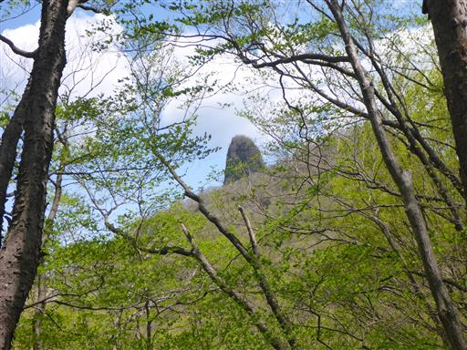
ここから谷急山までは急峻な登山道が続く。
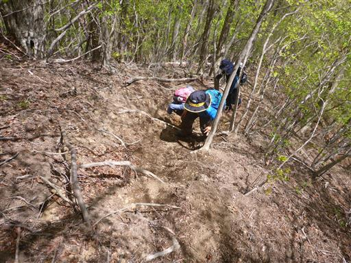
痩せ尾根。
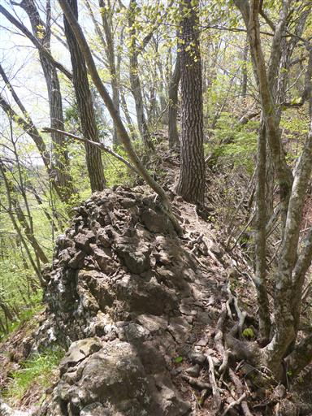
谷急山側にも岩峰が聳えている。
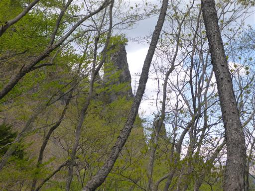
木の根に捕まってよじ登る。
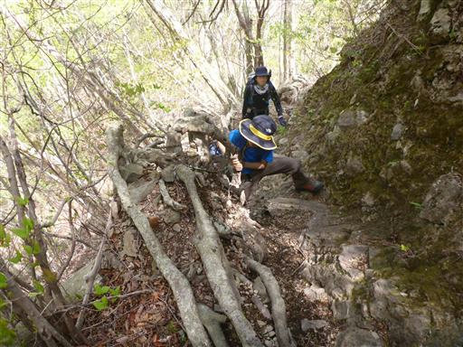
展望の良い場所に出てくる。背景は裏妙義。
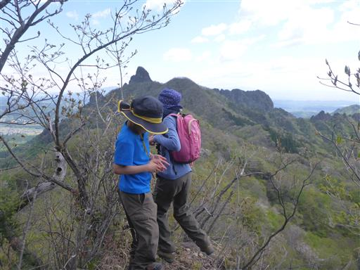
こちらは表妙義。とんでもなくギザギザの稜線だ。
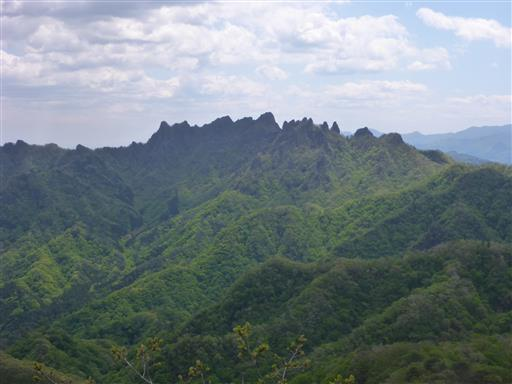
再び急斜面。
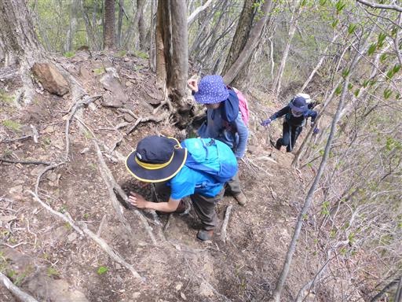
鎖が現れる。本格的な鎖場があるのはここのみ。
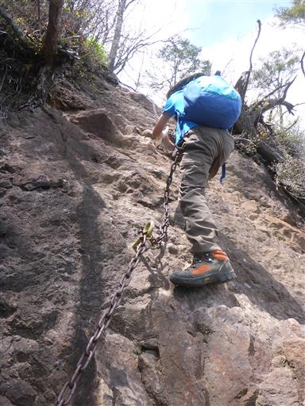
眼下の新緑が美しい。
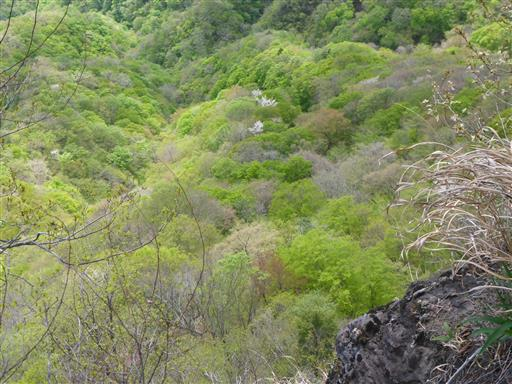
P2に出てくると、ようやく谷急山の山頂が見える。
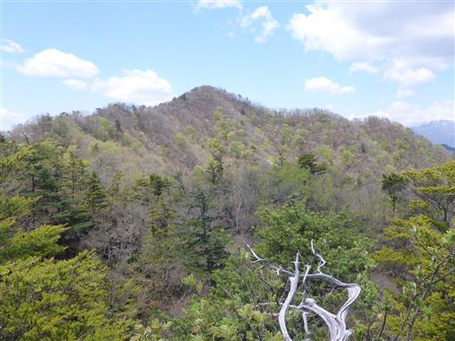
遠くに荒船山が見えている。特徴的な山容で良く目立つ。
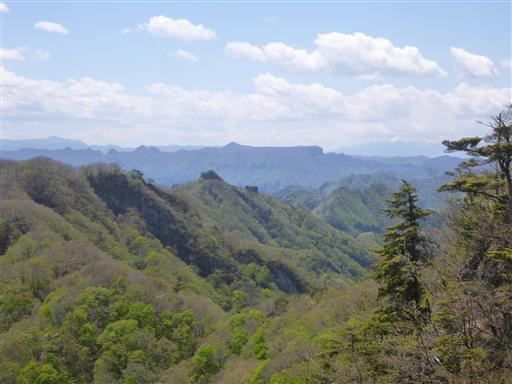
V字キレット。大岩が2つに割れたのか、何とも不思議な光景だ。
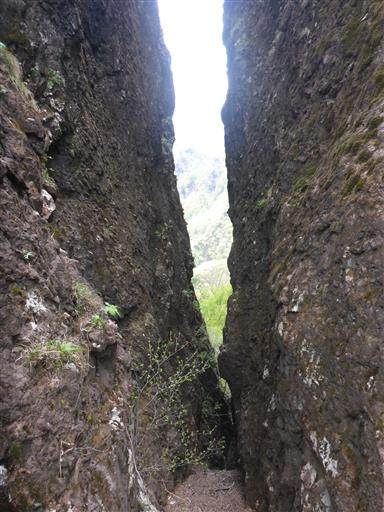
しばらく登ったり下ったりを繰り返す。
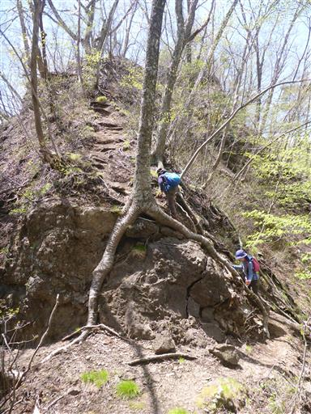
狭い岩棚を通過。横から生えている木が邪魔で歩きにくい。
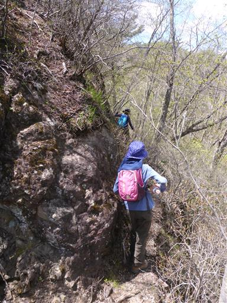
子供達はどんどん先に行ってしまう。
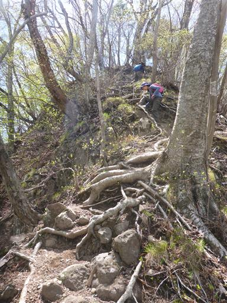
山頂が見えてきた。
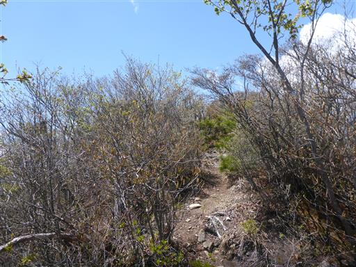
谷急山山頂到着。標高1162m。
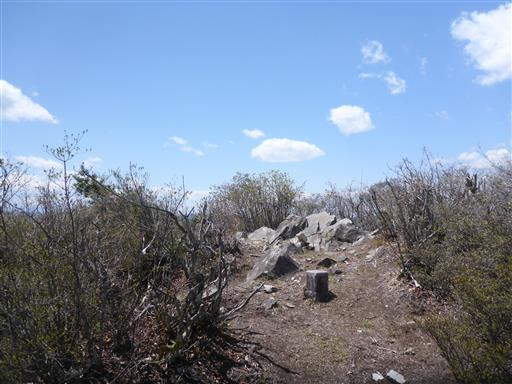
山頂からは360度の大展望が広がる。
まず目を引くのがギザギザの稜線を持つ妙義山。
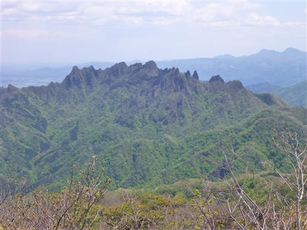
こちらは裏妙義。右端のピークの小さな突起が丁須ノ頭だ。
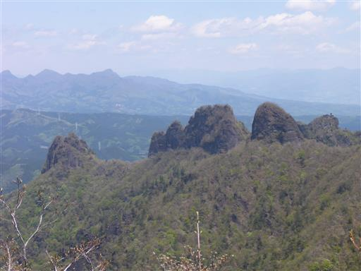
こちらは高岩。ここもいつか登りたいと思っている山だが、訪問の機会がない。
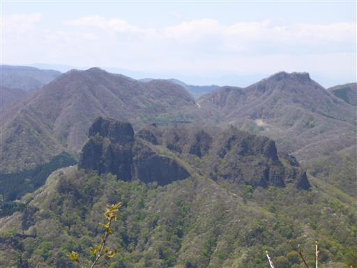
西上州の岩山だけでなく、雄大な浅間山も見渡せる。

本日は風が強いが山頂はなぜかあまり風が吹いておらず、
ゆっくりと昼食休憩をとることにする。
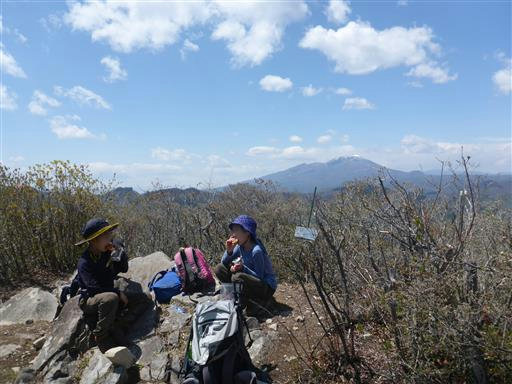
下山道は女道コース分岐点まで戻り、そこからコースを変えて、三方境方面に向かう。
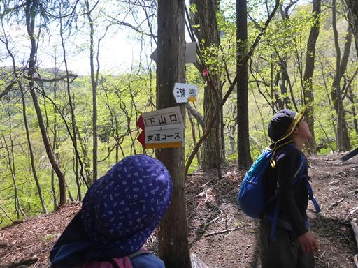
少しだけ登り返しがある。
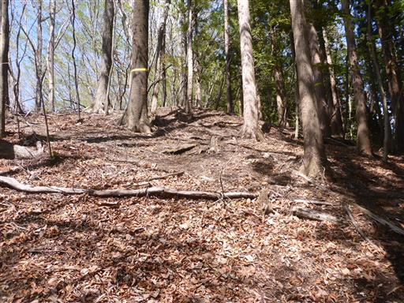
三方境に到着。以前裏妙義を歩いたときにここを通ったはずだ。
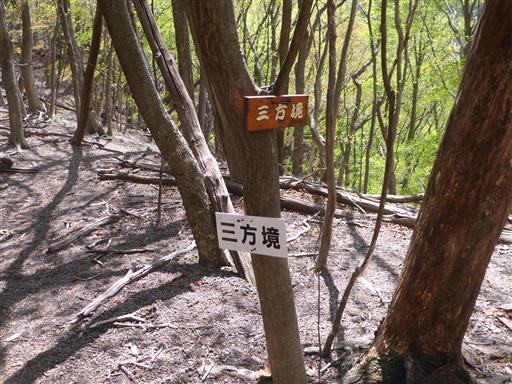
ここからは巡視道と呼ばれる難易度の低い登山道。
難易度が低いのは良いが、歩いていてつまらない道でもある。
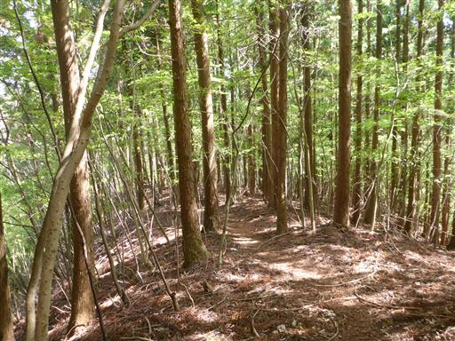
標識が木に飲み込まれている。
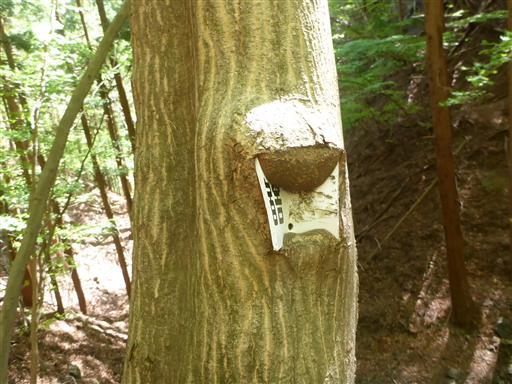
少々通過に気を使う場所もある。
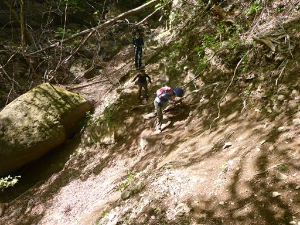
間伐がなされず真っ暗になっている杉林。
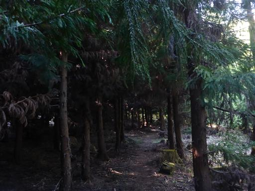
林道に出てくる。ここで裏妙義からの登山道と合流。
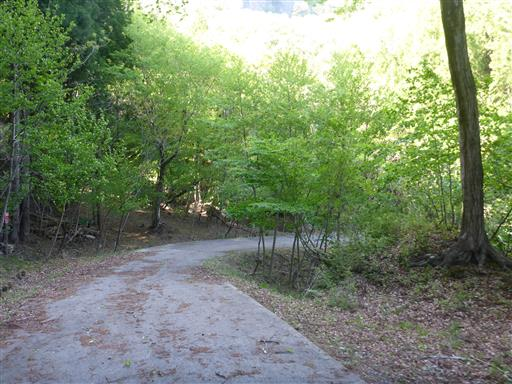
頭上には岩山が聳えている。
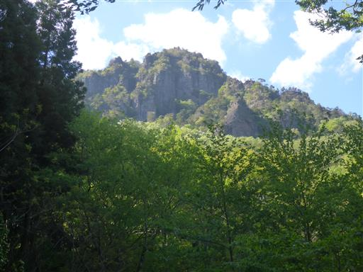
国民宿舎裏妙義に戻ってくる。開いていた窓が閉まっている。
閉館は2016年なのだが、まだ管理されているのだろうか？
出会った登山者は2グループ3人と、予想通り人の少ない山だった。
この辺りでは表妙義、裏妙義ばかり注目されるが、谷急山も非常に良い山だった。
少々登山道の難易度は高いが、爽快な尾根歩きができ、山頂からの展望も良く
新緑（秋には恐らく紅葉）がきれいで、もっと注目されても良い山だと思う。
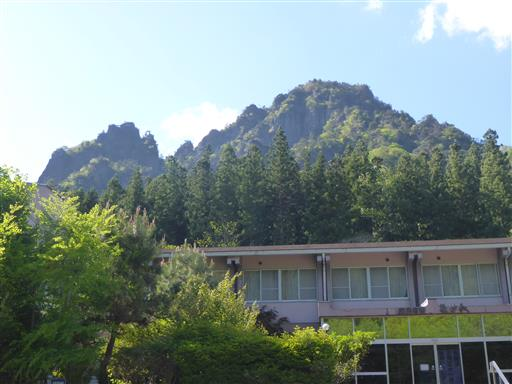